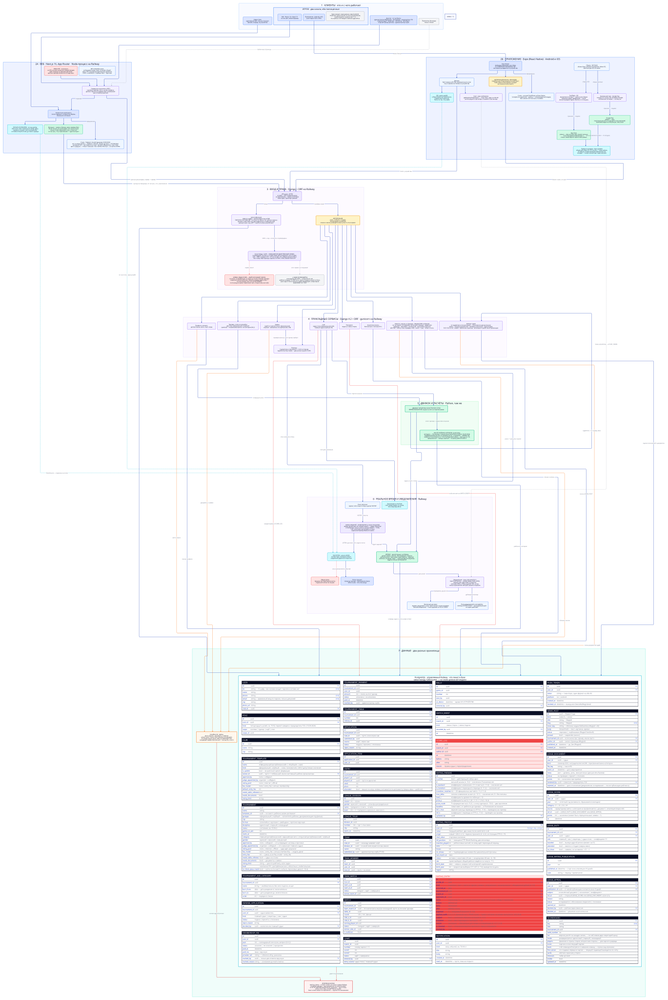
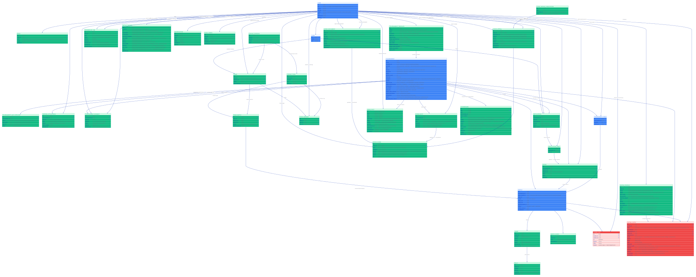
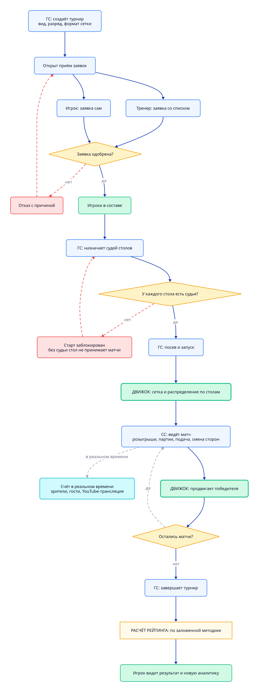
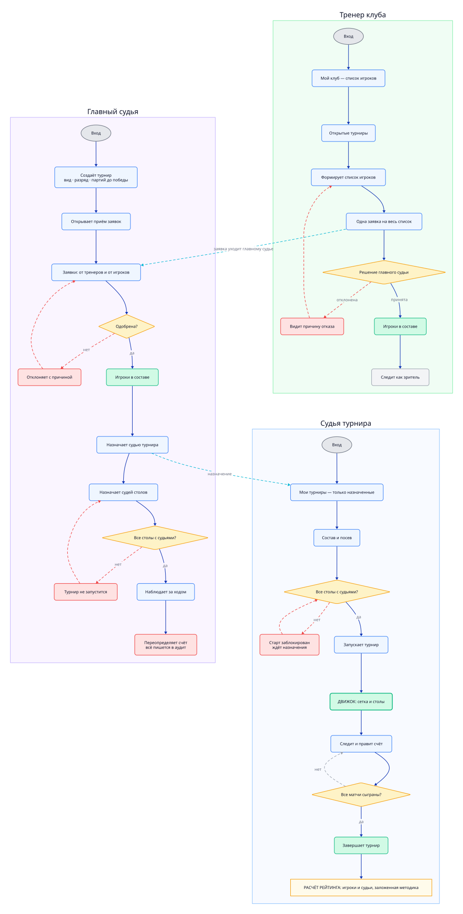
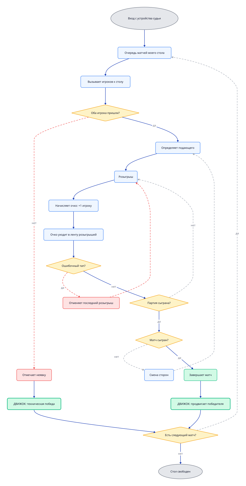
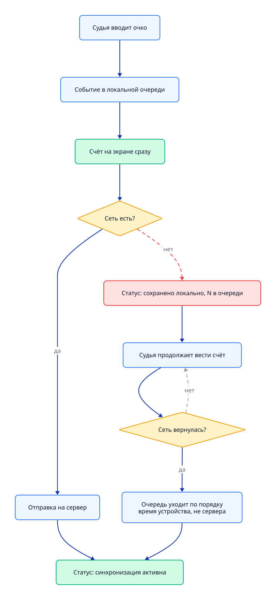
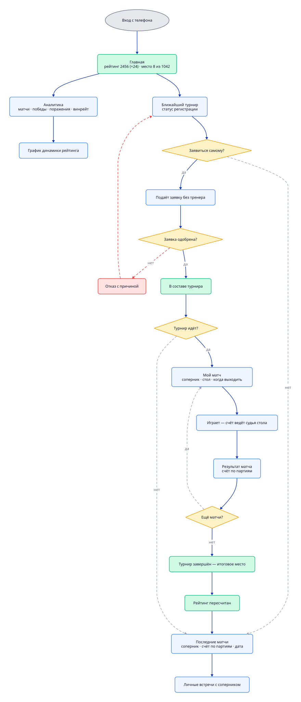

Архитектура
Клиенты → шлюз → авторизация → сервисы → движок → данные. Зелёное — то, что переиспользуется.

Доменная модель
Зелёные таблицы — новые сущности: GAME (партия), RALLY (розыгрыш), RATING_POINT. Красная — неизменяемый аудит.

Иерархия ролей
Наследование прав: вышестоящая роль может всё, что может нижестоящая.

Жизненный цикл турнира
Сквозной сценарий через все роли. ГС — главный судья, СТ — судья турнира, СС — судья стола.

Управляющие роли — десктоп
Показаны рядом, потому что сцеплены: тренер подаёт → главный судья одобряет → судья турнира запускает.

Судья стола — планшет
Розыгрыши, партии, подача, смена сторон. Счёт судьи авторитетный.

Обрыв сети
Идёт параллельно всему циклу судьи: порядок событий восстанавливается по времени на устройстве, не на сервере.

Игрок — телефон
Единственная роль с аналитикой. Счёт своих матчей не вводит.
